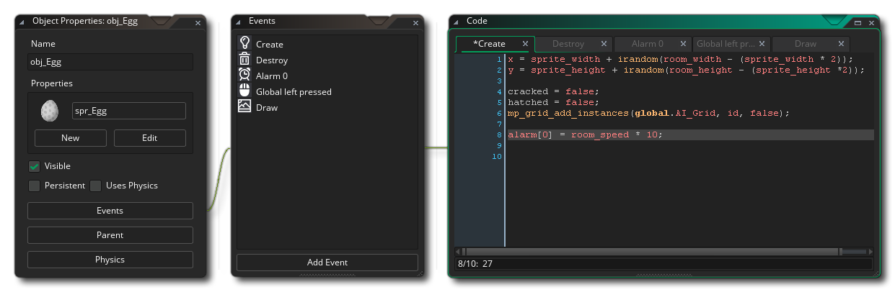

Dieser Abschnitt des Handbuchs enthält alle Informationen, die zum Verständnis und zur Verwendung der GameMaker Studio 2 Skriptsprache GML erforderlich sind. Der Code in dieser Sprache kann zum Erstellen Ihrer Spiele verwendet werden und wird Objekten aus dem Objekt-Editor hinzugefügt, normalerweise wenn Sie ein neues GameMaker Sprachprojekt erstellt haben, obwohl es auch zusammen mit DnD™ (Drag and Drop) verwendet werden kann ). Im Folgenden sehen Sie ein typisches Bild eines Objekts mit geöffnetem Code-Editor für ein Ereignis:  Jedes Ereignis hat einen eigenen Tab im Editor und Sie können jederzeit Code hinzufügen, bearbeiten oder entfernen (weitere Informationen zu Ereignissen finden Sie unter Objektereignisse ). Der Code selbst muss eine Grundstruktur haben und Ressourcen-Indizes, Variablen, Funktionen, Ausdrücke, Schlüsselwörter usw. enthalten, die in den folgenden Abschnitten erläutert werden. Wenn Sie die Programmierung oder den Wechsel von DnD™ noch nicht verstanden haben, sollten Sie zunächst mit der Seite zur grundlegenden Codestruktur beginnen und diese dann durchlesen, indem Sie Code aus jedem der Bereiche in GameMaker Studio 2 selbst testen.